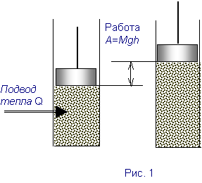

1. Промышленная революция и развитие теории теплоты
Как уже было сказано ранее, классическая физика пыталась свести все силы к силам притяжения и отталкивания. Но, как вскоре выяснилось, в природе встречаются и более сложные связи. Прежде всего, они обратили на себя внимание при изучении тепловых явлений и фазовых переходов. Сложность причинно-следственных связей проявилась, в частности, в следующем.
Во-первых,, у одного и того же следствия могут быть разные причины: например, превращение насыщенного пара в жидкость за счет повышения давления или понижения температуры.
Во-вторых,, оказалось, что при тепловых процессах состояние отдельных частиц (молекул) не отражает состояние системы в целом.
Действительно, если рассмотреть, например, тепловое движение, то здесь параметры отдельной частицы: скорость, кинетическая энергия, импульс (называемые также микропараметрами) изменяются без изменения макропараметров (Т0, Р, V), характеризующих систему в целом. Следовательно, состояние системы не определяется состоянием отдельных частиц.
Изменения микропараметров частиц описываются статистическими законами, носящими вероятностный характер. Это связано с действием на частицы большого числа случайных обстоятельств и с проявлением случайности в их движении. Несмотря на то, что и случайные явления имеют свою причину, предсказать те или иные следствия в этом случае можно лишь с определенной степенью вероятности. Таким образом, лапласовский детерминизм оказывается здесь несостоятельным.
Пристальное изучение тепловых явлений началось уже во 2-й половине 18 в. Это было связано с началом промышленной революции, изобретением и внедрением паровых машин.
Среди ученых, чьи труды легли в основу физики тепловых явлений следует назвать Р.Фурье, который вывел дифференциальное уравнение теплопроводности, Никола Леонарда Сади Карно, исследовавшего работоспособность тепловых машин, Клапейрона, который вывел уравнение состояния газа, впоследствии обобщенное Менделеевым в известное уравнение Клапейрона-Менделеева, и др.
Подлинным основателем механической теории теплоты считается немецкий физик Рудольф Эмануэль (1822-1888), вошедший в историю науки под латинским псевдонимом Клаузиус. В середине 19 в. он начал исследовать принцип эквивалентности теплоты и работы и введя понятие внутренней энергии, пришел к пониманию взаимопревращения энергии. До этого в физике существовало понятие механической энергии и представление об ее сохранении и превращении.
2. Работа в механике. Закон сохранения и превращения энергии в механике
Формирование понятия механической энергии было связано с формированием понятия механической работы А = F•x и энергии, как способности совершать работу.
Как известно, сообщить телу кинетическую энергию можно двумя способами:
а) передать при столкновении (например,
удар шаров)
б) “подталкивая” с помощью некоторой силы F
Работа и энергия, как составные части, входят в один и тот же закон сохранения. Действительно, тело, двигаясь, сжимает пружину, и, растратив свою энергию на сжатие пружины, останавливается, вслед за этим пружина начинает распрямление, ускоряя тело, вся совершаемая при этом работа уходит на увеличение кинетической энергии тела. Что же в результате имеет система “пружина-тело”, когда движение прекратилось, а вся кинетическая энергия затрачена на сжатие пружины? Запас кинетической энергии не пропал бесследно, а перешел в запас энергии, которым обладает пружина в сжатом состоянии (“мертвой силы”, как ее первоначально называли). Такая форма энергии называется потенциальной. Другой способ запасти такую энергию - поднять груз на высоту.
Таким образом, термин “потенциальная энергия” относят к энергии запасенной в деформированном теле, в теле, поднятом на высоту, одним словом, к запасу энергии, обусловленному положением тела в некотором поле и природой самого поля. (Современной физике известно четыре типа полей, соответствующим четырем взаимодействиям: гравитационное, электромагнитное, сильное и слабое). Таким образом, понятие потенциальной энергии применимо не только к механическим явлениям.
Изменение потенциальной энергии определяется конкретной природой взаимодействия системы тел (гравитационным, электромагнитным, сильным, слабым) и зависит от изменения конфигурации тел в соответствующих полях.
Консервативные и диссипативные силы. Силы, величина которых зависит от взаимного расположения, или конфигурации тел и не зависят от движения, называются консервативными. Это – силы, проявляющиеся в потенциальных полях. (По определению потенциальные поля – это поля, работа сил которых не зависит от траектории движения). Гравитационное и электростатическое поля, как известно, являются потенциальными.
Рассмотрим примеры обусловленности потенциальной энергии конкретными видами взаимодействия системы тел. Так, потенциальная энергия сжатой пружины выражает собой энергию внутреннего движения частиц, составляющих пружину. Однако, механика не занимается изучением “внутренних сил”, связанных взаимодействием атомов и молекул, а интересуется конечным результатом. Этот результат может быть вычислен по величине работы, которую нужно затратить, чтобы изменить конфигурацию частей пружины. Запас этой работы и понимается как потенциальная энергия пружины. Потенциальная энергия – свойство системы материальных тел совершать работу при изменении конфигурации тел в системе.
Таким образом, работа может быть определена как мера изменения энергии.
В ряде случаев работа, совершаемая за счет уменьшения потенциальной энергии, практически полностью идет на увеличение кинетической энергии тела. Эти случаи и послужили основанием для формулирования закона сохранения и превращения энергии применительно к механическим процессам.
Вспомним формулировку закона:
Полная энергия замкнутой консервативной системы тел, равная сумме потенциальной и кинетической энергии, остается величиной постоянной.
Важно помнить также, что физический закон имеет границы своей применимости. В данном случае мы имеем два ограничения:
1) система должна быть изолированной от
внешних воздействий (замкнутость системы);
2) система должна быть консервативной, т.е. в
ней должны быть только консервативные силы.
В случае, если работа сил зависит от формы пути или же сами силы зависят от скорости движения, механическая энергия системы не сохраняется. Например, силы трения, которые не являются консервативными (зависят от скорости), происходит уменьшение, «рассеяние» энергии, или, что то же самое, ее диссипация [1].
Мы знаем, что силы трения присутствуют практически всегда, и в действительности мы не имеем дела со строго консервативными системами. Однако закон сохранения механической энергии имеет огромное значение, поскольку, во-первых, существует множество явлений, которые допускает подобную идеализацию, например, при малых ∆t, когда трением можно пренебречь; во-вторых, без установления этого закона было бы очень трудно сделать следующий шаг и выяснить, куда же растрачивается механическая энергия
3. Теплородная и кинетическая теория теплоты
До середины 19-го в. понятия «теплоты» и «температуры» не разделялись. Так, в словаре церковно-славянского русского языка, середина 19 в. можно прочитать следующее: «Температура есть мера сгущения теплорода, показываемая в градусах термометром». и «Теплород – вещественная причина жара, тепла и холода, непостижимо тонкая жидкость, изливающаяся из Солнца и проникающая во все тела физического мира, невидимая, невесомая и только ощущением ощущаемая». Само слово теплород в русском языке является переводом-«калькой» латинского слова «калория».
Серьезный (но не окончательный) удар теории теплорода был нанесен опытами графа Б. Румфорда (Бенджамин Томпсон)
А. Эйнштейн и Л. Инфельд писали: «В истории физики часто встречаются такие испытания, которые способны произвести приговор о жизни или смерти теории: они называются crucis (решающими) экспериментами... Такой решающий эксперимент был проведен Румфордом; он нанес смертельный удар субстанциальной теории теплоты» [2]. Исследования Румфорда касались вопроса об эквиваленте теплоты и механической работы.
Опыты Румфорда. Румфорд проводил опыты с трением. Теплородная теория объясняла выделение теплоты при трении тел друг о друга тем, что при трении тела как бы «выжимают» из себя теплород, вследствие чего количества теплорода в них (теплоемкость) должны изменяться.
В своей известной работе «Исследование источника тепла, вызываемого трением» (1798 г.) Румфорд привел результаты эксперимента, связанного со сверлением пушечного ствола. В течение 2,5 часов за счет трения было получено количество теплоты, достаточной для превращения в пар 12 кг воды при получении всего лишь 270 г. металлической стружки. Далее было показано, что стружка имеет такую же удельную теплоемкость как исходный материал отливки, т.е. о никакой «выжимке» не могло быть речи, и теплота не могла быть получена за счет «выжимания» теплорода из металла. «... источник теплоты, порожденный трением, - писал Б. Румфорд, - оказался в этих экспериментах неисчерпаемым». Следовательно, нечто, которое любое изолированное тело или система тел может поставлять без ограничения не может быть материальной субстанцией.
Тем не менее, несмотря на опыты Румфорда теплородная теория не была изжита. Для окончательной победы кинетической теории потребовались исследования обратных процессов – превращения теплоты в работу. Такими исследованиями стали работы по исследованию функционирования тепловых машин, получивших к началу 19 в. широкое распространение. К этому времени встала задача о повышении их эффективности, для чего был необходим теоретический анализ процесса превращения теплоты в работу. Это и сделал Сади Карно в 1827 г. Тогда было уже совершенно ясно, что теплота и механическая работа обратимы одна в другую. Для торжества кинетической теории важно было установить механический эквивалент теплоты.
Количественное соотношение для превращения «механическая работа ® теплота» было определено немецким врачом Робертом Майером. Он установил, что теплоемкости газа в процессах при постоянном давлении (Ср) и при постоянном объеме (Сv) неодинаковы, причем Ср>Сv . Действительно, при р=const изменение объема V газа сопровождается толканием поршня, т.е. совершением работы. Если рассматривать теплоту как “силу”, рассуждал Майер (а под “силой” он понимал то, что впоследствии стало называться энергией), то понятно, почему Ср>Сv . Причем если найти DС = Ср - Сv и сопоставить с работой А, можно получить механический эквивалент теплоты.
Достаточно точно значение механического эквивалента теплоты было определено Джоулем. Джоуль поставил опыт, в котором опускающийся груз вращал лопатку, помещенную в различные жидкости. Перемешивание жидкости приводило к ее нагреванию. Сопоставляя значение механической работы опускающегося груза с количеством теплоты, необходимым для нагревания жидкости на определенную температуру, Джоуль определил значение механического эквивалента теплоты.
4. Термодинамика и статистическая физика
Термодинамика. Работы Майера, Джоуля, Гельмгольца позволили выработать так называемый. “закон сохранения сил” ( понятия «сила» и «энергия» в то время еще строго не различались). Однако первая ясная формулировка этого закона была получена физиками Р. Клаузиусом и У. Томсоном (лордом Кельвином) на основе анализа исследования работы тепловой машины, которое провел С. Карно. Рассматривая превращения теплоты и работы макроскопических системах С. Карно фактически положил начало новой науке, которую Томсон впоследствии назвал термодинамикой. Термодинамика ограничивается изучением особенностей превращения тепловой формы движения в другие, не интересуясь вопросами микроскопического движения частиц, составляющих вещество.
Термодинамика, таким образом, рассматривает системы, между которыми возможен обмен энергией, без учета микроскопического строения тел, составляющих систему, и характеристик отдельных частиц. Различают термодинамику равновесных систем или систем, переходящих к равновесию (классическая, или равновесная термодинамика) и термодинамику неравновесных систем (неравновесная термодинамика). Классическая термодинамика чаще всего называется просто термодинамикой и именно она составляет основу так называемой Термодинамической Картины Мира (ТКМ), которая сформировалась к середине 19 в. Неравновесная термодинамика получила развитие во второй половине 20-го века и играет особую роль при рассмотрении биологических систем и феномена жизни в целом.
Таким образом, при исследовании тепловых явлений выделились два научных направления:
1. Термодинамика, изучающая тепловые
процессы без учета молекулярного строения
вещества;
2. Молекулярно-кинетическая теория (развитие
кинетической теории вещества в противовес
теории теплорода);
Молекулярно-кинетическая теория. В отличие от термодинамики молекулярно-кинетическая теория характеризуется рассмотрением различных макроскопических проявлений систем как результатов суммарного действия огромной совокупности хаотически движущихся молекул. Молекулярно-кинетическая теория использует статистический метод, интересуясь не движением отдельных молекул, а только средними величинами, которые характеризуют движение огромной совокупности частиц. Отсюда второе название молекулярно-кинетической теории – статистическая физика.

Первое начало термодинамики. Опираясь на работы Джоуля и Майера, Клаузнус впервые высказал мысль, сформировавшуюся впоследствии в первое начало термодинамики. Он сделал вывод, что всякое тело имеет внутреннюю энергию U . Клаузиус назвал ее теплом, содержащимся в теле, в отличие от “тепла Q, сообщенного телу”. Внутреннюю энергию можно увеличить двумя эквивалентными способами: проведя над телом механическую работу -А, или сообщая ему количество теплоты Q.
D U = Q - A
В 1860 г. У. Томсон окончательно заменив устаревший термин “сила” термином “энергия”, записывает первое начало термодинамики в следующей формулировке:
Количество теплоты, сообщенное газу, идет на увеличение внутренней энергии газа и совершение газом внешней работы (рис.1).
Q = D U + A
Для бесконечно малых изменений имеем
dQ =d U + d A
Первое начало термодинамики, или закон сохранения энергии, утверждает баланс энергии и работы. Его роль можно сравнить с ролью своеобразного «бухгалтера» при взаимопревращения различных видов энергии друг в друга.
Если процесс циклический, система возвращается в исходное состояние и U1 = U2 , a dU = 0. В этом случае все подведенное тепло идет на совершение внешней работы. Если при этом и Q = 0, то и А = 0, т.е. невозможен процесс, единственным результатом которого является производство работы без каких-либо изменений в других телах, т.е. работа «вечного двигателя» (perpetuum mobile).
Майер в своей работе составил таблицу всех рассмотренных им “сил” (энергий) природы и привел 25 случаев их превращений (тепло ® механическая работа ® электричество, химическая «сила» вещества ® теплота, электричество). Майер распространил положение о сохранении и превращении энергии и на живые организмы (поглощение пищи ® химические процессы ® тепловые и механические эффекты).
Эти примеры впоследствии были подкреплены работами Гесса (1840 г.), в которых исследовалось превращение химической энергии в теплоту, а также Фарадея, Ленца и Джоуля, в результате которых был сформулирован закон Джоуля-Ленца (1845) о связи электрической и тепловой энергии Q = J2Rt.
Таким образом, постепенно, на протяжении более четырех десятилетий сформировался один из самых великих принципов современной науки, приведший к объединению самых различных явлений природы. Этот принцип заключается в следующем:
Существует определенная величина, называемая энергией, которая не меняется ни при каких превращениях, происходящих в природе. Исключений из закона сохранения энергии не существует.
Контрольные вопросы
1. Почему исследование тепловых явлений и
фазовых переходов выявило
несостоятельность лапласовского
детерминизма?
2. Что такое микропараметры, макропараметры
при исследовании тепловых явлений?
3. С чем было связано изучение тепловых
явлений и когда оно началось?
4. Назовите ученых, чьи труды легли в основу
физики тепловых явлений.
5. Что такое консервативные силы?
Диссипативные силы? Приведите примеры.
6. Для каких систем справедлив закон
сохранения механической энергии?
7. Что такое потенциальная энергия? Только
ли к механическим системам применимо
понятие потенциальной энергии? Поясните.
8. Объясните кратко теорию теплорода.
9. Какие опыты, опровергающие теорию
теплорода, были проведены Румфордом?
10. Почему теплоемкости газа в процессах при
постоянном давлении (Ср) и при
постоянном объеме (Сv)
неодинаковы? Кто из ученых впервые
обнаружил этот факт?
11. Что такое термодинамика? Что она изучает?
12. Что изучает молекулярно-кинетическая
теория?
13. Что такое статистическая физика? Откуда
такое название?
14. Сформулируйте первое начало
термодинамики.
15. С чем (кем) можно образно сравнить первое
начало термодинамики?
1. Дягилев Ф.М. Концепции современного
естествознания. – М.: Изд. ИМПЭ, 1998.
2. Концепции современного естествознания./
под ред. проф. С.А. Самыгина, 2-е изд. – Ростов
н/Д: «Феникс», 1999.
3. Дубнищева Т.Я.. Концепции современного
естествознания. Новосибирск: Изд-во ЮКЭА,
1997.
4. Ремизов А.Н. Медицинская и биологическая
физика. – М.: Высшая школа, 1999.
[1]
<лат. dissipatio рассеяние
[2]
цитируется в соответствии с [2]
Права на распространение и использование курса принадлежат
Уфимскому Государственному Авиационному
Техническому Университету